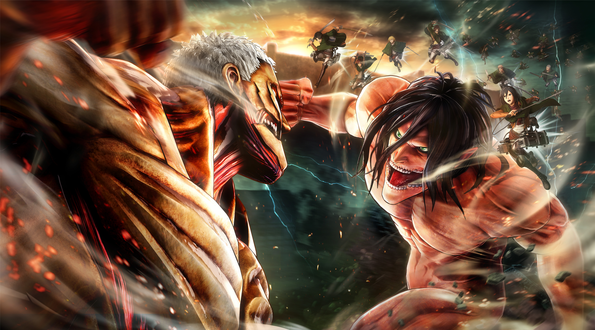
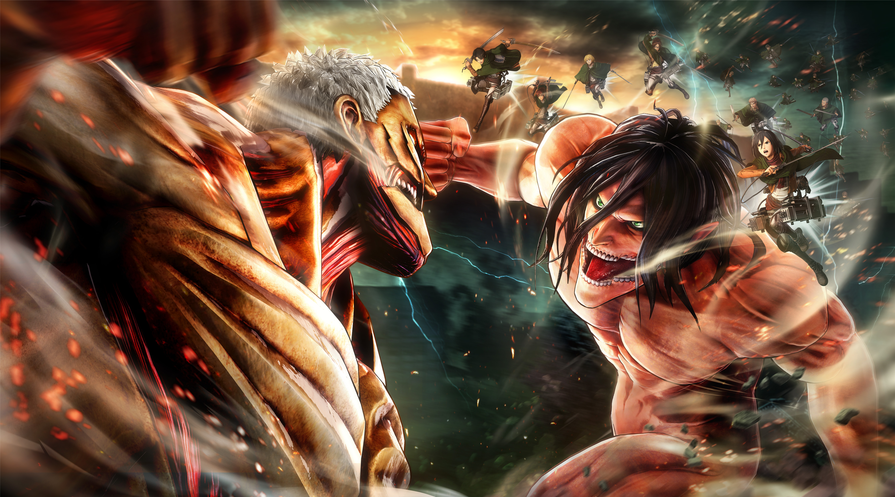

Моїми найулюбленішими аніме є Ван Піс, Джоджо, Хантер х Хантер та Атака Титанів. Ван Піс зачарував мене своєю захоплюючою історією про пригоди Манкі Д. Луффі та його команди шукачів великого скарбу One Piece. Джоджо - це незвичайна історія про сім'ї Джоджо, яка володіє надприродними здібностями і вступає в надзвичайні сутички.
Хантер х Хантер - це захоплююча подорож юного Гон Фрікса, який стає мисливцем на монстрів, щоб знайти свого зниклого батька. Атака Титанів - це напружена історія боротьби людей за виживання у світі, зараженому гігантськими титанами.
Кожне з цих аніме має свою неповторну атмосферу та захоплюючий сюжет, і я завжди з нетерпінням чекаю нових випусків та пригод героїв цих серіалів.